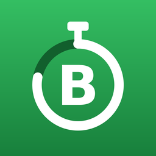

Bens Timer
DeutschEnglishDatenschutz / PrivacyImpressum
Support
Bens Timer ist ein werbefreier Intervall-Timer für iPhone, iPad, Mac und Apple Watch – ohne Konto, ohne Tracking.
Die Watch-App erscheint nicht
iPhone → App „Watch“ → Meine Watch → ganz unten „Verfügbare Apps“ → bei „Bens Timer“ auf „Installieren“ tippen. Voraussetzung: watchOS 10 oder neuer (ab Version 1.1.2).
Meine Vorlagen fehlen auf der Watch
Vorlagen werden auf dem iPhone angelegt und automatisch übertragen. Öffne die App einmal auf dem iPhone und dann auf der Watch.
Abschnitte frei festlegen
Vorlage bearbeiten → „Intervalle“ → „Abschnitte frei festlegen“ einschalten. Jede Runde besteht dann aus eigenen Arbeits- und Pausenabschnitten mit eigener Dauer, eigenem Namen und auf Wunsch eigener Figur. Bearbeitet wird auf iPhone oder iPad, die Watch spielt die Liste ab (ab Version 1.1.2).
Hinweis „Watch-App kennt keine Abschnittslisten“
Die Watch-App ist noch nicht auf dem neuesten Stand. Aktualisiere Bens Timer auf der Watch (iPhone → App „Watch“ → Meine Watch → Bens Timer) und öffne die App einmal auf der Watch. Bis dahin läuft eine Vorlage mit Abschnittsliste nur auf dem iPhone.
Bens Timer auf dem Mac
Ab Version 1.2 gibt es eine eigene Mac-App (macOS 26 oder neuer), kostenlos im Mac App Store. Training im eigenen Fenster oder im Vollbild, Tastatur: Leertaste pausiert, ← → wechseln den Abschnitt, Esc beendet, ⌘N neue Vorlage, ⌘R starten. Einstellungen unter Bens Timer → Einstellungen (⌘,). Apple Watch, Puls und Apple Health gibt es nur in der iPhone-App.
Vorlagen zwischen iPhone, iPad und Mac abgleichen
Auf jedem Gerät „Über iCloud abgleichen“ einschalten (iPhone/iPad: Menü „…“, Mac: Einstellungen). Vorlagen und die Einstellungen „Beenden bestätigen“ und „Figur animieren“ gleichen sich dann über dein eigenes iCloud-Konto ab; das kann einige Sekunden bis Minuten dauern. „iCloud-Daten löschen …“ entfernt die Daten wieder aus iCloud, die Vorlagen auf den Geräten bleiben erhalten. Die Watch bekommt die Vorlagen weiter vom iPhone (ab Version 1.2).
Klappuhr und Vollbild
Vorlage bearbeiten → „Design“ → „Thema“ → „Klappuhr“ (auf den Phasenfarben) oder „Klappuhr Dark“ (ganz in Schwarz): Die Restzeit erscheint als umklappende Ziffernkarten. Das leise Klappgeräusch schaltest du im Menü „…“ (Mac: Einstellungen) unter „Klappgeräusch“ ab. Im Training blendet der Knopf oben rechts die Steuerung aus (Mac/iPad-Tastatur: ⌘B) – die Ziffern füllen dann den Bildschirm, Tippen auf die Zeit pausiert, Leertaste und ← → funktionieren weiter (ab Version 1.3).
Weitere Themen
Ab Version 1.3.3 gibt es sechs weitere Themen unter „Design“ → „Thema“: „Mitternacht“ und „Beere“ (Farbthemen), „LCD“ (Ziffern wie auf einer Digitaluhr), „Punktmatrix“ (LED-Anzeige), „Kreidetafel“ und „Papier“. Auf der Apple Watch erscheinen LCD und Punktmatrix vereinfacht auf Schwarz.
Einfacher Timer
Ab Version 1.4: oben neben „Bens Timer“ auf den roten Knopf „Timer“ tippen (Mac/iPad-Tastatur: ⌘T), eine Dauer aus der Schnellwahl antippen oder mit den Rädern einstellen. Der Lauf zeigt ein Zifferblatt und eine Uhr, auf der die Restzeit bis zur Endzeit markiert ist (iPhone hochkant: wischen; quer, iPad und Mac: nebeneinander). Am Ende: „Nochmal“, „+1 min“ oder „Fertig“. Endklang, Wiederholen, Startklang, Vorwarnung, Zwischensignal, dunkles Zifferblatt und die Schnellwahl stellst du im Menü „…“ der Zeitwahl ein. Ist die App nicht geöffnet, meldet sich der Timer am Ende mit einer Mitteilung – dafür beim ersten Start „Erlauben“ wählen (später: Einstellungen → Mitteilungen → Bens Timer). Auf dem Sperrbildschirm, in der Dynamic Island und im Smart Stack der Apple Watch läuft der Timer als Live-Aktivität mit Pause und Beenden (ab iOS 18). Auf der Apple Watch: „Timer“ oben in der Liste.
Siri und Kurzbefehle
Ab Version 1.4, ohne Einrichtung: „Starte Bens Timer 5 Minuten“, „Starte Bens Timer Tabata“ (Name einer Vorlage), „Pausiere Bens Timer“, „Setze Bens Timer fort“, „Beende Bens Timer“. Siri kennt feste Dauern von 10 Sekunden bis 12 Stunden (z. B. 90 Sekunden, 2 Minuten 30, 45 Minuten, 1 Stunde 30); andere Zeiten nimmt Siri als nächstliegenden Wert. Für eine beliebige Dauer: „Stelle Bens Timer“ – Siri fragt dann „Wie lange?“. Alle Sätze stehen in der App unter „…“ → „Siri & Kurzbefehle“. Siri versteht die Sätze in der Sprache, auf die Siri eingestellt ist (Deutsch, Englisch, Spanisch, Französisch).
Workouts nicht in Apple Health speichern
Apple Watch → Bens Timer → Zahnrad → „In Health speichern“ ausschalten. Berechtigungen lassen sich jederzeit in Einstellungen → Health → Datenzugriff & Geräte ändern.
Sprache ändern
In der App: Menü „…“ → „Sprache ändern“, oder Einstellungen → Apps → Bens Timer → Sprache. Mac: Systemeinstellungen → Allgemein → Sprache & Region → Apps.
Neue Beispiel-Vorlagen fehlen nach einem Update
Menü „…“ → „Beispiele hinzufügen“. Deine eigenen Vorlagen bleiben unverändert.
Klänge
Zusätzliche Klänge (Boxglocke, Gong, Windspiel, Klangschale): Joseph Sardin – BigSoundBank.com, Lizenz CC0 (gemeinfrei). Röhrenglocken, Handglocken, Metallophon und Kalimba (ab Version 1.2.1): Versilian Community Sample Library (Versilian Studios), Lizenz CC0 (gemeinfrei). Alle übrigen Klänge sind selbst erzeugt.
Support (English)
Ben's Timer is an ad-free interval timer for iPhone, iPad, Mac and Apple Watch – no account, no tracking.
The Watch app does not appear
iPhone → Watch app → My Watch → scroll to “Available Apps” → tap “Install” next to “Ben's Timer”. Requires watchOS 10 or later (from version 1.1.2).
My presets are missing on the Watch
Presets are created on the iPhone and transferred automatically. Open the app once on the iPhone, then on the Watch.
Custom sections
Edit a preset → “Intervals” → turn on “Custom sections”. Each round then consists of your own work and rest sections, each with its own duration, name and, if you like, its own figure. Edit on iPhone or iPad; the Watch plays the list (from version 1.1.2).
Note “Watch app doesn’t support section lists”
The Watch app is not up to date yet. Update Ben's Timer on the Watch (iPhone → Watch app → My Watch → Ben's Timer) and open the app once on the Watch. Until then, a preset with custom sections runs on the iPhone only.
Ben's Timer on the Mac
From version 1.2 there is a native Mac app (macOS 26 or later), free on the Mac App Store. Train in a window or full screen; keyboard: space pauses, ← → change the section, Esc ends, ⌘N new preset, ⌘R start. Settings under Ben's Timer → Settings (⌘,). Apple Watch, heart rate and Apple Health are available in the iPhone app only.
Sync presets between iPhone, iPad and Mac
Turn on “Sync via iCloud” on each device (iPhone/iPad: “…” menu, Mac: Settings). Presets and the settings “Confirm ending” and “Animate figure” then sync via your own iCloud account; this can take a few seconds to minutes. “Delete iCloud Data …” removes the data from iCloud again; the presets on your devices are kept. The Watch keeps getting its presets from the iPhone (from version 1.2).
Flip clock and full screen
Edit a preset → “Design” → “Theme” → “Flip clock” (on the phase colors) or “Flip clock dark” (all black): the remaining time is shown as flipping digit cards. Turn off the soft flip sound in the “…” menu (Mac: Settings) under “Flip sound”. During a workout, the button top right hides the controls (Mac/iPad keyboard: ⌘B) – the digits then fill the screen, a tap on the time pauses, space and ← → keep working (from version 1.3).
More themes
From version 1.3.3 there are six more themes under “Design” → “Theme”: “Midnight” and “Berry” (color themes), “LCD” (digits like a digital watch), “Dot matrix” (LED display), “Chalkboard” and “Paper”. On Apple Watch, LCD and dot matrix are shown simplified on black.
Simple timer
From version 1.4: tap the red “Timer” button next to “Ben's Timer” at the top (Mac/iPad keyboard: ⌘T), tap a quick pick or set a duration with the wheels. The run shows a dial and a clock face that marks the remaining time up to the end time (iPhone portrait: swipe; landscape, iPad and Mac: side by side). At the end: “Again”, “+1 min” or “Done”. End sound, repeat, start sound, advance warning, interval signal, dark dial and the quick picks are in the “…” menu of the time picker. When the app is not open, the timer ends with a notification – choose “Allow” on first use (later: Settings → Notifications → Ben's Timer). On the Lock Screen, in the Dynamic Island and in the Apple Watch Smart Stack the timer runs as a Live Activity with pause and end (iOS 18 or later). On Apple Watch: “Timer” at the top of the list.
Siri and Shortcuts
From version 1.4, no setup needed: “Start Ben's Timer 5 minutes”, “Start Ben's Timer Tabata” (name of a preset), “Pause Ben's Timer”, “Resume Ben's Timer”, “Stop Ben's Timer”. Siri knows fixed durations from 10 seconds to 12 hours (e.g. 90 seconds, 2 minutes 30, 45 minutes, 1 hour 30); other times are taken as the nearest value. For any duration: “Set Ben's Timer” – Siri then asks for the duration. All phrases are listed in the app under “…” → “Siri & Shortcuts”. Siri understands the phrases in the language Siri is set to (German, English, Spanish, French).
Don’t save workouts to Apple Health
Apple Watch → Ben's Timer → gear icon → turn off “Save to Health”. You can change permissions at any time in Settings → Health → Data Access & Devices.
Change language
In the app: “…” menu → “Change language”, or Settings → Apps → Ben's Timer → Language. Mac: System Settings → General → Language & Region → Apps.
New example presets are missing after an update
“…” menu → “Add examples”. Your own presets stay unchanged.
Sounds
Additional sounds (boxing bell, gong, wind chimes, singing bowl): Joseph Sardin – BigSoundBank.com, licensed CC0 (public domain). Tubular bells, hand bells, metallophone and kalimba (from version 1.2.1): Versilian Community Sample Library (Versilian Studios), licensed CC0 (public domain). All other sounds are synthesized by the developer.